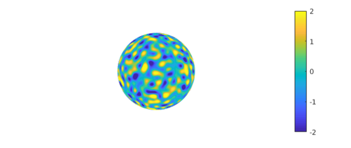
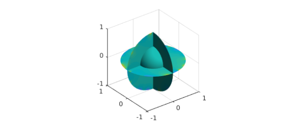
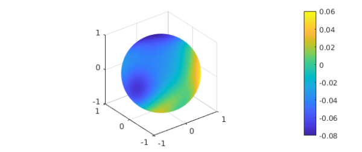

1. The Laplace problem
Suppose we are given a function $h(x,y,z)$ on the unit sphere $S$ and we want to solve the Laplace equation in the unit ball $B$ with $h$ as boundary data, $$ \Delta u = 0, \quad u = h \hbox{ on } S. $$ Here we illustrate how this might be done in Ballfun.
Given the tools available, the boundary data will have to be reasonably smooth. Let us choose a smooth random function with characteristic wavelength $\lambda = 0.2$.
rng(1) lambda = 0.2; h = randnfunsphere(lambda); plot(h), axis off, colorbar, caxis([-2 2])

You can call spherefun with three arguments, which are interpreted as cartesian coordinates $x,y,z$:
h(1,0,0)
ans = -0.761180229121337
Alternatively, you can call it with two arguments, which are interpreted as longitude and polar angles (the latter measured down from the north pole):
h(0,pi/2)
ans = -0.761180229121337
The mean of $h$ is small but nonzero:
meanh = mean2(h)
meanh = -0.020281680162226
2. Solution with the poisson command
In Ballfun, there is a command poisson to solve the Poisson equation, which becomes the Laplace equation if we take the right-hand side to be zero. For this command, we need to specify a grid parameter $m$, which will need to grow in proportion to $1/\lambda$ if we want an accurate solution. Here we determine a suitable $m$ by looking at the lengths of the Spherefun representation if $h$.
[a,b] = length(h); m = ceil(max(a,b)); zero = ballfun(0); u = poisson(zero,h,m);
Here, using cartesian coordinates, we confirm that $u$ matches the boundary data at the point $(1,0,0)$:
h(1,0,0) u(1,0,0)
ans = -0.761180229121337 ans = -0.761180229121336
Here, using spherical coordinates, we confirm that it matches the boundary data at the longitude and latitude coordinates of Oxford.
long = -1.26*pi/180; lat = 51.75*pi/180; h(long, pi/2-lat) u(1, long, pi/2-lat,'spherical')
ans = -1.847977702024471 ans = -1.847977702024464
Another check we can carry out concerns mean values. The value of $u$ at the origin should equal the mean of the boundary data:
meanh u(0,0,0)
meanh = -0.020281680162226 ans = -0.020281680162149
3. The solution on an inner sphere
Since the Laplace equation is a smoothing operation, the solution $u$ is not very exciting in the interior. For example, if we simply plot $u$, the image shows an apparently uniform color in the inner sphere of radius $1/2$:
plot(u)

We can construct a spherefun corresponding to the values of $u$ on this sphere of radius $0.5$ and plot it:
uinner = u(.5,:,:,'spherical'); plot(uinner), colorbar

Note the small range of values revealed in the colorbar. The mean value over this sphere is our familiar value:
meanh mean2(uinner)
meanh = -0.020281680162226 ans = -0.020281680162215